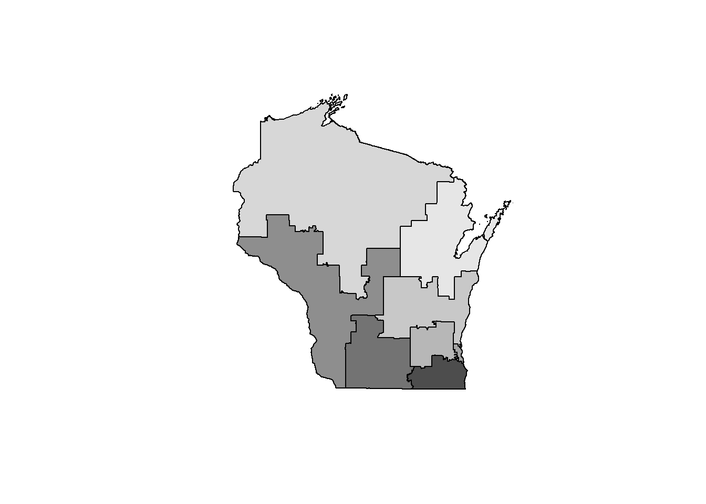
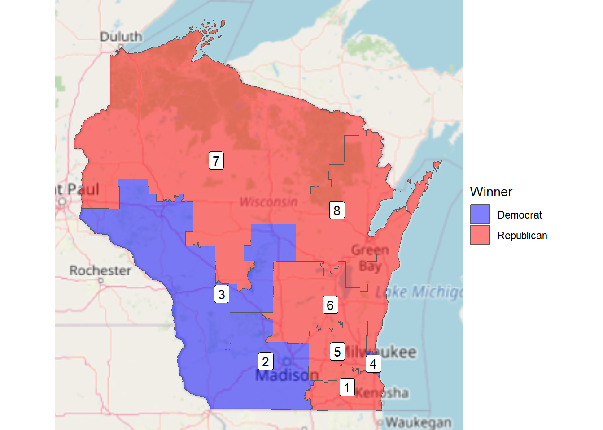

# A tibble: 1 × 5
d_total r_total total_votes_sum prop_r prop_d
<dbl> <dbl> <dbl> <dbl> <dbl>
1 1445015 1401995 2862367 0.490 0.505WisconsinVotes
Driver: ESRI Shapefile
Available layers:
layer_name geometry_type features fields crs_name
1 districts113 Polygon 436 15 NAD83Reading layer `districts113' from data source
`C:\Users\Walter\AppData\Local\Temp\RtmpghD3gE\districts113\districtShapes'
using driver `ESRI Shapefile'
Simple feature collection with 436 features and 15 fields (with 1 geometry empty)
Geometry type: MULTIPOLYGON
Dimension: XY
Bounding box: xmin: -179.1473 ymin: 18.91383 xmax: 179.7785 ymax: 71.35256
Geodetic CRS: NAD83
Simple feature collection with 6 features and 22 fields
Geometry type: MULTIPOLYGON
Dimension: XY
Bounding box: xmin: -92.808 ymin: 42.49198 xmax: -87.50719 ymax: 45.20957
Geodetic CRS: WGS 84
STATENAME ID DISTRICT STARTCONG ENDCONG DISTRICTSI COUNTY PAGE LAW
1 Wisconsin 055113114001 1 113 114 <NA> <NA> <NA> <NA>
2 Wisconsin 055113114002 2 113 114 <NA> <NA> <NA> <NA>
3 Wisconsin 055113114003 3 113 114 <NA> <NA> <NA> <NA>
4 Wisconsin 055113114004 4 113 114 <NA> <NA> <NA> <NA>
5 Wisconsin 055113114005 5 113 114 <NA> <NA> <NA> <NA>
6 Wisconsin 055113114006 6 113 114 <NA> <NA> <NA> <NA>
NOTE BESTDEC FINALNOTE RNOTE LASTCHANGE
1 <NA> <NA> {"From US Census website"} <NA> 2016-05-29 16:44:10.857626
2 <NA> <NA> {"From US Census website"} <NA> 2016-05-29 16:44:10.857626
3 <NA> <NA> {"From US Census website"} <NA> 2016-05-29 16:44:10.857626
4 <NA> <NA> {"From US Census website"} <NA> 2016-05-29 16:44:10.857626
5 <NA> <NA> {"From US Census website"} <NA> 2016-05-29 16:44:10.857626
6 <NA> <NA> {"From US Census website"} <NA> 2016-05-29 16:44:10.857626
FROMCOUNTY N total_votes d_votes r_votes other_votes r_prop winner
1 F 3 364891 158414 200423 6054 0.5492681 Republican
2 F 6 390111 265422 124683 6 0.3196090 Democrat
3 F 2 339425 217712 121713 0 0.3585858 Democrat
4 F 3 325321 235257 80787 9277 0.2483301 Democrat
5 F 2 368813 118478 250335 0 0.6787586 Republican
6 F 3 359381 135921 223460 0 0.6217914 Republican
geometry
1 MULTIPOLYGON (((-89.08072 4...
2 MULTIPOLYGON (((-90.43 43.1...
3 MULTIPOLYGON (((-91.3984 44...
4 MULTIPOLYGON (((-88.06601 4...
5 MULTIPOLYGON (((-89.01359 4...
6 MULTIPOLYGON (((-89.78555 4...Warning in st_point_on_surface.sfc(sf::st_zm(x)): st_point_on_surface may not
give correct results for longitude/latitude data
Gerrymandering?
When one looks at a map, one expects that Democrats should win about half of the seats and that Republicans should win the other half. However, this is not the case. Instead, this map tells us that Republicans won 5 of 8 available districts with democrats claiming the remaining 3. Gerrymandering is hard to explicitly prove, but intuition tells us that something is off. It is for this reason that we might create these kinds of maps before moving to rigorous statistical methods to tell us if something is unexpected.